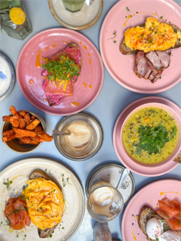

I’ve posted my picks for London sweets and brunches, but I haven’t talked about my love for London cafés! I explored many London cafés during my time in London …

While studying abroad in London, I was obsessed with the abundance of street food and markets that are in and around London ...

During my time studying abroad in London I made it a priority to seek out all of the best dessert spots in London ...
If you’ve read any of my other blog posts, you know I go crazy over brunch! When on vacations and weekends it is my favorite …